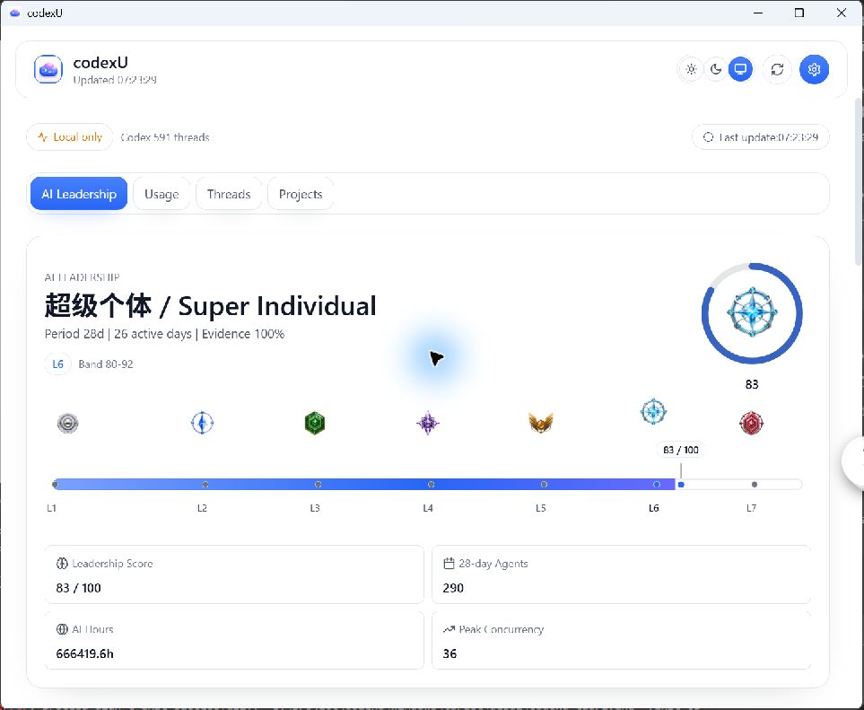

Report date: 2026-07-26
Scope: Windows Tauri UI parity for AI Leadership default hero, leadership level mapping, metric layout semantics, settings panel integrity, theme centralization, and dark-mode regression fix.
Files modified:
| Band | Canonical id | Score range | 中文 | English | Badge file |
|---|---|---|---|---|---|
| L1 | l1 | 0–19 | 碳基牛马 | Carbon Laborer | Resources/LeadershipBadges/leadership-badge-l1.png |
| L2 | l2 | 20–34 | 赛博监工 | Cyber Overseer | Resources/LeadershipBadges/leadership-badge-l2.png |
| L3 | l3 | 35–49 | 分身队长 | Clone Captain | Resources/LeadershipBadges/leadership-badge-l3.png |
| L4 | l4 | 50–64 | 硅基领主 | Silicon Lord | Resources/LeadershipBadges/leadership-badge-l4.png |
| L5 | l5 | 65–79 | 硅基统帅 | Silicon Marshal | Resources/LeadershipBadges/leadership-badge-l5.png |
| L6 | l6 | 80–92 | 超级个体 | Super Individual | Resources/LeadershipBadges/leadership-badge-l6.png |
| L7 | l7 | 93–100 | 人类最强者 | Humanity's Apex | Resources/LeadershipBadges/leadership-badge-l7.png |
Source references: Sources/CodexUsageWidget/Domain/LeadershipModel.swift and Sources/CodexUsageWidget/UI/LeadershipViews.swift.
| Token class | Owned by |
|---|---|
| Palette-owned accent | Resources/Palettes/codexu.default (accent.primary, accent.primaryStrong, accent.secondary, accent.secondaryStrong, accent.highlight) |
| Palette-owned quota | Resources/Palettes/codexu.default (quota.primary, quota.secondary) |
| Palette-owned data | Resources/Palettes/codexu.default (data.*) |
| Palette-owned selection | Resources/Palettes/codexu.default (selection.*) |
| Palette-owned ornament | Resources/Palettes/codexu.default (ornament.*) |
| App theme-owned surface | windows/apps/codexu-tauri/web/src/utils/appTheme.ts (--surface*) |
| App theme-owned text | windows/apps/codexu-tauri/web/src/utils/appTheme.ts (--text-*) |
| App theme-owned status | windows/apps/codexu-tauri/web/src/utils/appTheme.ts (--status-*) |
| Palette color facts | accent.primary #2866F7; accent.primaryStrong #1F59ED; accent.secondary #8B6DFF; data.tokenInput #0A84FF; data.tokenCached #8B6DFF; data.tokenOutput #FF9F0A |
Windows acceptance assets in docs/windows-port/reports/assets and mac promo references:



| Axis | Baseline | Final |
|---|---|---|
| Architecture | Leadership rendering used a rank row and orbit flow, but not all band thresholds and badge linkage were represented as a native continuous rail. | Final architecture uses a continuous command rail with real l1–l7 resources at canonical thresholds 0/20/35/50/65/80/93, score/title row, and compact 83/100 marker context. |
| Rank/gradient behavior | Gradient and current-score mapping were not fully validated in native final evidence. | Full 0–100 semantic gradient is shown and clipped to current score boundary in final native capture. |
| Primary color | Palette and app tokens were shared without explicit full separation. | Palette ownership preserved for accent/quota/data/selection/ornament; app owns surface/text/status for stable light and dark behavior. |
| Layout density | 2×2 key metric density was not explicitly linked to final command-rail state. | Leadership continues to show score/title plus compact 2×2 metric matrix in accepted layout. |
| Navigation/intent | Navigation existed, but mac promo and Windows intent were mixed in comparison framing. | Windows keeps white tool surface and native navigation; mac references are retained as hierarchy references only, not a pixel-copy mandate. |
| Validation | Native no-signal/no-diff proof was missing. | No pixel-diff was run; one native release screenshot (963×791) is now captured as final acceptance evidence. |
| Readability | Dark-mode readability was unstable in earlier pass. | Light/Dark/System readability is stable after theme-token fix and release smoke launch. |
| Command | cwd | Exit | Raw output tail |
|---|---|---|---|
| npm run build | windows/apps/codexu-tauri/web | 0 | ✓ built in 3.15s |
| cargo test --workspace | windows | 0 | running 9 tests, test result: ok. 9 passed |
| cargo tauri build --no-bundle (attempt 1) | windows/apps/codexu-tauri/src-tauri | 1 | error: failed to remove file ... codexu-tauri.exe (os error 5) |
| cargo tauri build --no-bundle (retry) | windows/apps/codexu-tauri/src-tauri | 0 | Finished `release` profile ... Built application at: E:\\project\\codexU\\windows\\target\\release\\codexu-tauri.exe |
| git diff --check | repo root | 0 | No whitespace errors detected (warning: LF→CRLF conversion note only). |
| windows/target/release/codexu-tauri.exe release smoke launch | repo root | 0 | process_count=1, window_count=1; native final screenshot captured as final-leadership-command-rail.png at 963×791. |
Leadership command rail architecture, band semantics, and theme ownership are functionally aligned in this release stage with mac semantic intent and native confirmation.
Outstanding gaps are process scope only: no pixel-diff run and no no-signal native artifact in this cycle.
feat(windows-ui): add Leadership command rail